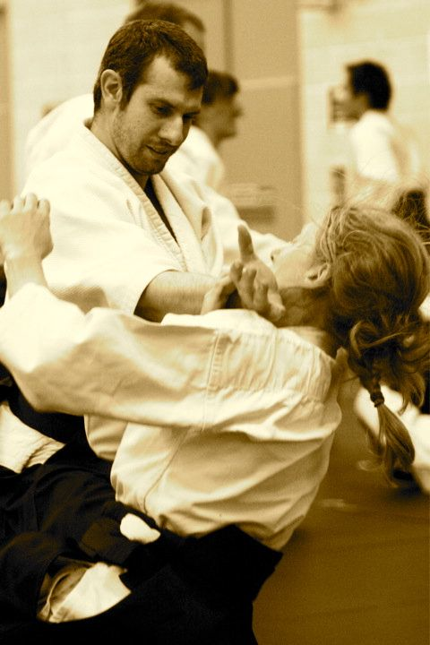

Instructors

Antonios Pavlakis 1st dan (shodan so-Hombu) has been studying aikido since 1997 and has a Sports England teaching qualification (CL1) through the British Aikido Board (BAB).
Antonis started Aikido at De Montfort University Aikido Club under the instruction of Dave Lenton sensei. In 1999, Dave Lenton sensei (4th dan) passed the club to Terry Mickowski sensei (4th dan) with whom he has been training ever since.
In 2009, when he received his teaching qualifications be became an assistant coach at DMU.
He often travels abroad to attend aikido classes and over the years has practiced with
J. C. Aegerter shihan, N. Tamura shihan, C. Tissier shihan, Ian Grubb shidoin, Y. Kobayashi shihan, as well as the present Doshu.
He gets regular tuition from Philip Smith shihan (6th dan) from Ren Shin Kan dojo and other UKA shihan and shidoin.